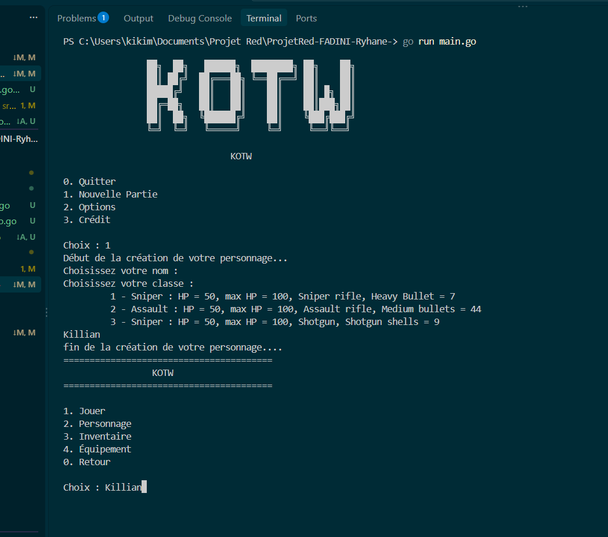
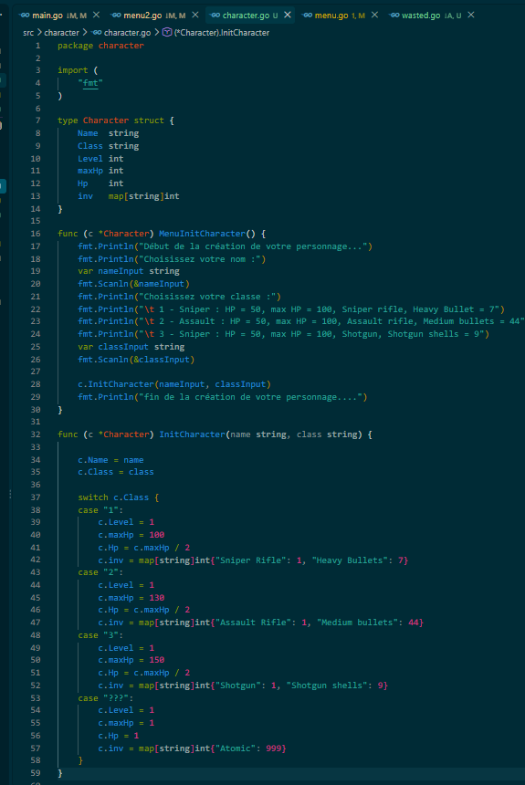

Description du projet
Présentation du projet RED - Jeu KOTW** Le projet RED consiste à développer un jeu dans le terminal, que nous avons nommé KOTW (King of the World). Ce projet a été réalisé à l'aide du langage de programmation Go (Golang). L'objectif était de concevoir un jeu fonctionnel en mettant en pratique nos compétences en développement informatique. Go a été utilisé pour programmer la logique et le fonctionnement général du jeu. Nous avons organisé le programme en plusieurs fonctions afin de séparer les différentes fonctionnalités. Nous avons utilisé des variables, des conditions et des boucles pour gérer les actions et les événements du jeu. La lecture et l'affichage des informations dans le terminal permettent au joueur d'interagir avec le jeu. Nous avons également travaillé sur la gestion des entrées utilisateur pour récupérer les choix des joueurs. Nous avons utilisé des structures de données pour stocker et organiser les informations nécessaires au jeu. La programmation en Go nous a permis de travailler sur la logique algorithmique et la gestion des données. Nous avons structuré notre code pour le rendre plus lisible, organisé et facile à modifier. Nous avons également utilisé le terminal pour lancer le programme et observer son fonctionnement. Plusieurs tests ont été réalisés afin de vérifier les différentes fonctionnalités. Nous avons corrigé les erreurs rencontrées pendant le développement pour améliorer la stabilité du jeu. Ce projet nous a permis de développer nos compétences en programmation Go, en algorithmique et en résolution de problèmes. Le projet RED a donc été une expérience enrichissante, mêlant réflexion, technique et travail de développement.